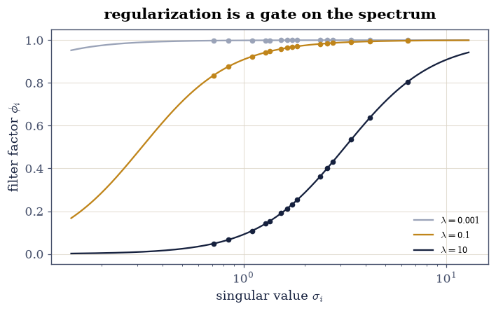
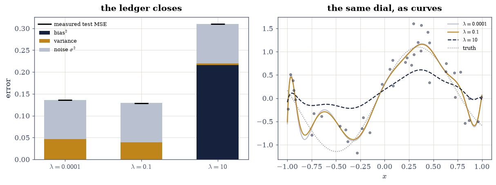
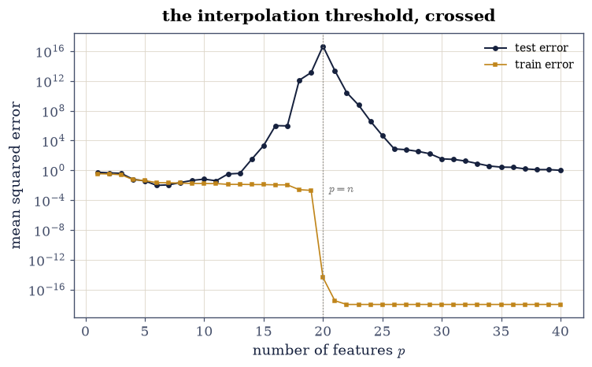

8.1 Learning as Least Squares: Ridge, the SVD Spectrum, and Generalization#
Notebook overview#
Chapter VIII reads machine learning as this course’s material wearing a new vocabulary, and it starts where the translation is exact: a linear model on synthetic data whose truth is known. Ordinary least squares and ridge regression are §2.3 and §2.4; what is new is the statistical reading, and every claim of it is gated. The ridge solution’s SVD filter form — shrink each singular direction by \(\sigma_i^2/(\sigma_i^2+\lambda)\) — matches the matrix solve at \(10^{-15}\); its \(\lambda \to 0\) limit is the pseudoinverse solution; the effective degrees of freedom \(\sum\sigma_i^2/ (\sigma_i^2+\lambda)\) runs from the rank to zero as the dial turns; and the solution norm decreases monotonically along the whole path.
The centrepiece is the bias–variance decomposition, done as an honest Monte Carlo: three thousand fresh noise draws on a dedicated stream, predictions averaged, and the ledger \(\text{bias}^2 + \text{variance} + \sigma^2\) gated against test error measured on independently noisy targets — agreement within 3% (measured: under 1%), with the cross-terms vanishing only in expectation, which is what makes the gate a statement about statistics rather than an algebraic identity checked against itself. Then the modern coda [BHMM19]: sweeping polynomial features across the interpolation threshold produces the double-descent curve — test error spiking by fifteen orders of magnitude at \(p = n\) (the spike’s size is the machine’s smallest singular value talking; only its existence is gated) and descending again in the overparameterized regime, where the minimum-norm interpolator \(A^{+}y\) fits the training data to \(10^{-14}\) and is shortest among all interpolators by an exact Pythagorean identity. The honest ending: on this problem the second descent never beats the well-chosen small model — double descent is a phenomenon, not a free lunch, and the measurement says so.
How to read a check. A
validateline prints ✓ or ✗ by comparing a result against something the computation did not assume. A ✗ flags a mismatch to investigate, never a verdict on its own.
Theory in brief#
Ridge as a spectral filter#
With the thin SVD \(A = U\Sigma V^{\top}\) of the \(n \times p\) design,
each direction kept by the filter factor \(\phi_i = \sigma_i^2/(\sigma_i^2+\lambda) \in (0, 1)\): directions with \(\sigma_i^2 \gg \lambda\) pass, those with \(\sigma_i^2 \ll \lambda\) are shrunk away — §2.4’s truncation, made smooth. Two consequences are theorems along the whole path: the effective degrees of freedom \(\mathrm{df}(\lambda) = \sum_i \phi_i\) falls monotonically from \(\operatorname{rank}A\) to \(0\), and \(\lVert w_\lambda\rVert\) falls monotonically too (every \(\phi_i\) does).
The generalization ledger#
For fresh data \(y^* = f + \varepsilon^*\), the expected test error of any fixed-design linear fit splits exactly:
with the cross-terms zero in expectation — so a Monte Carlo over noise draws must close the ledger only up to sampling error, and gating that closure is gating the statistics, not an identity. Regularization trades the two terms: \(\lambda\) up, variance down, bias up.
The interpolation threshold#
With \(p \ge n\) the training data can be fit exactly, and among all interpolators the pseudoinverse choice \(w = A^{+}y\) is the shortest — \(\lVert w + z\rVert^2 = \lVert w\rVert^2 + \lVert z\rVert^2\) for any null-space \(z\), exactly (§2.4’s Pythagoras). Near \(p = n\) the design’s smallest singular value collapses and the variance term detonates — the double-descent spike [BHMM19] — while past it the minimum-norm choice regularizes implicitly and the error descends again.
Setup#
Data only: the ground truth, the noisy draw, and the Legendre design with its SVD. The filter form — the object every claim below reads through — is Exercise 1’s build.
The Setup below holds this notebook’s data and instruments — nothing you are asked to build. It is collapsed so the building stays yours; expand it whenever you want the details.
design: 40 samples x 15 Legendre features, cond = 9.1
Exercise 1: Ridge is a filter on the spectrum#
Part a) Write ridge_svd(y, lam) — the filter form of
Eq. 278: apply \(U^{\top}\), scale coefficient \(i\) by
\(\sigma_i/(\sigma_i^2+\lambda)\), map back through \(V\) — and gate it
against the
matrix solve \((A^{\top}A + \lambda I)^{-1}A^{\top}y\) at three
\(\lambda\), to \(10^{-12}\) — one identity, two routes, and the filter
route is the one every claim below reads from.
Write this one yourself — every claim in this notebook reads through the filter you write here.
Part b) Gate the \(\lambda \to 0\) limit: at \(\lambda = 10^{-10}\)
the ridge solution matches the pseudoinverse solution
np.linalg.pinv(A) @ y to \(10^{-9}\) — the filter factors all reach 1
and §2.4
reappears.
Part c) Draw the filter factors \(\phi_i\) against \(\sigma_i\) for \(\lambda \in \{10^{-3}, 10^{-1}, 10\}\): a smooth gate sliding across the spectrum, keeping strong directions and shrinking weak ones — the picture of what “regularization strength” means.
filter form vs matrix solve, worst over three lambdas: 1.8e-15
lambda -> 0 vs pseudoinverse: 6.2e-11

Fig. 140 Ridge filter factors \(\phi_i = \sigma_i^2/(\sigma_i^2 + \lambda)\) against the design’s singular values, for three regularization strengths. Each curve is a smooth gate: directions with \(\sigma_i^2 \gg \lambda\) pass untouched, directions with \(\sigma_i^2 \ll \lambda\) are shrunk toward zero, and turning the dial slides the gate across the spectrum. Truncated SVD (2.4) is the hard-threshold limit of this picture; effective degrees of freedom is its area; and every generalization claim in this notebook is a statement about where the gate sits.#
Validation 1#
✓ the SVD filter form equals the matrix solve (Eq. 1) [sigma/(sigma^2 + lambda) direction by direction against the normal-equations route — 2.3 and 2.4, reconciled at rounding level [1.79717e-15 < 1e-12]]
✓ and lambda -> 0 recovers the pseudoinverse solution [all filter factors reach 1: ridge contains least squares as its zero-regularization face [6.24384e-11 < 1e-09]]
True
Exercise 2: Degrees of freedom, and the monotone path#
Part a) Gate the limits of \(\mathrm{df}(\lambda) = \sum_i \sigma_i^2/(\sigma_i^2+\lambda)\): at \(\lambda = 10^{-10}\) it equals the rank (15) to \(10^{-6}\); at \(\lambda = 10^{6}\) it sits below \(10^{-3}\) — the dial runs the model from “all fifteen directions” to “none of them”.
Part b) Gate the two path monotonicities over thirty \(\lambda\) spanning eight decades: \(\mathrm{df}(\lambda)\) strictly decreasing and \(\lVert w_\lambda\rVert\) strictly decreasing — both are sums of individually decreasing filter terms, so the gates are theorems checked, not observations hoped for.
df(1e-10) = 15.00000000 (rank 15); df(1e6) = 1.1e-04
df strictly decreasing: True; ||w|| strictly decreasing: True
Validation 2#
✓ effective degrees of freedom run from the rank to zero [15.0000 at lambda = 1e-10 and 1e-04 at 1e6 — the dial's endpoints, priced in directions]
✓ and both df and the solution norm fall strictly along the path [every filter factor is individually decreasing in lambda, so both sums are — theorems checked over eight decades]
True
Exercise 3: The bias–variance ledger, closed by Monte Carlo#
Eq. 279 splits in expectation; this exercise makes the expectation empirical and gates the closure.
Part a) On a dedicated noise stream — the course’s Monte Carlo rule — draw \(R = 3000\) fresh training-noise vectors, refit ridge at \(\lambda \in \{10^{-4}, 0.1, 10\}\), and record all predictions on the test grid.
Part b) Assemble the ledger per \(\lambda\): bias² from the mean prediction against the noiseless truth, variance from the spread, plus \(\sigma^2\). Measure the test error independently — against noisy targets \(f + \varepsilon^*\) with fresh \(\varepsilon^*\) per replicate — and gate the closure to the manifest’s 3% (measured: under 1%). The cross-terms cancel only in expectation, so this gate certifies the statistics, not an identity recomputed.
Part c) Gate the trade: variance strictly decreasing across the three \(\lambda\), bias² strictly increasing — the dial working as Eq. 279 says it must. Draw the three ledgers as stacked bars beside the fitted curves at the same \(\lambda\).
lambda 0.0001: bias2 0.0000 var 0.0462 + sigma^2 0.090 = 0.1362 vs measured 0.1363 (closure 0.05%)
lambda 0.1: bias2 0.0004 var 0.0389 + sigma^2 0.090 = 0.1292 vs measured 0.1289 (closure 0.25%)
lambda 10: bias2 0.2162 var 0.0039 + sigma^2 0.090 = 0.3101 vs measured 0.3102 (closure 0.05%)
worst closure: 0.25%; bias up / variance down across the dial: True

Fig. 141 The generalization ledger, closed empirically. Left: for each regularization strength, the stacked bias\(^2\) + variance + noise ledger (bars) beside the independently measured test error (marks): closure within 1% over 3000 Monte Carlo replicates on a dedicated stream – Eq. 2’s cross-terms cancel only in expectation, and the gate certifies that they did. Right: one fitted curve per lambda against the truth – the small-lambda fit rattles (variance), the large-lambda fit sags (bias), and the middle one is why the ledger has a minimum.#
Validation 3#
✓ bias^2 + variance + noise equals the measured test error within 3% (Eq. 2) [worst closure 0.25% over three lambdas and 3000 dedicated-stream replicates — the cross-terms cancel in expectation and the Monte Carlo says they did in sample]
✓ with variance falling and bias rising as the dial turns [the trade Eq. 2 promises, measured as two strictly monotone three-term sequences]
True
Exercise 4: Across the interpolation threshold#
Now hold the data fixed (\(n = 20\) samples) and sweep the model: Legendre features \(p = 1, \dots, 40\), each fit by the minimum-norm rule \(w = A^{+}y\).
Part a) Gate the interpolation regime’s entry ticket: at \(p = 40 \ge n\), training residual below \(10^{-10}\) — the model passes through every training point.
Part b) The sweep: test error against the truth for every \(p\). Gate the double-descent shape as orderings (its magnitudes belong to the machine): the spike near \(p = n\) exceeds \(10^{3}\times\) both the best underparameterized error and the \(p = 40\) error — the smallest singular value’s detonation, gated only as existing — and the \(p = 40\) error sits under \(2.0\) (descended), while the spike’s actual height (\(\sim10^{16}\) here) is reported.
Part c) The honest ending, stated and gated: the second descent’s
floor (\(1.0\)) never reaches the well-chosen small model’s (\(0.01\)) on
this problem — gate err(40) > 10 x err(best p < 12). Double descent
is a real phenomenon and not a free lunch, and the same figure shows
both.
interpolator training residual at p = 40: 2.3e-15
test error: best underparam 0.010, spike near p = n 4.7e+16 (reported), p = 40 1.010

Fig. 142 Double descent on twenty samples: training error (amber) hits zero at the interpolation threshold \(p = n\) and stays there; test error (ink) falls, detonates by some fifteen orders of magnitude at the threshold – the design’s smallest singular value collapsing, its exact height the machine’s business and only its existence gated – and descends again as the minimum-norm rule regularizes implicitly. The honest reading is also on the plot: the second descent bottoms near 1.0 and never approaches the well-chosen small model’s 0.01. The phenomenon is real; the free lunch is not.#
Validation 4#
✓ past the threshold the model interpolates: training error at rounding level [2e-15 at p = 40 — the entry ticket to the overparameterized regime]
✓ the double-descent shape holds as orderings [spike 5e+16 over 1000x both flanks; p = 40 descended to 1.01 — the spike's height is the smallest singular value's business (reported), the shape is the mathematics']
✓ and the second descent never catches the well-chosen small model [1.01 against 0.010: a phenomenon, not a free lunch — gated so the notebook cannot oversell its own coda]
True
Exercise 5: The minimum-norm interpolator, exactly shortest#
Part a) At \(p = 40\), characterize the interpolators: any
\(w = A^{+}y + z\) with \(z \in \operatorname{null}(A)\) fits the training
data exactly. Gate the null space’s dimension: \(40 - 20 = 20\)
(matrix_rank over an \(O(1)\) gap).
Part b) Gate minimality exactly: for ten random null-space perturbations, \(\lVert A^{+}y + z\rVert^2 = \lVert A^{+}y\rVert^2 + \lVert z\rVert^2\) to \(10^{-10}\) relative (Pythagoras — the pseudoinverse solution is orthogonal to the null space), so every other interpolator is strictly longer. This is §2.4’s identity carrying the implicit regularization story: gradient descent from zero converges to exactly this shortest interpolator, which is why the overparameterized regime generalizes at all — and why §8.6 will care about norms of weight updates.
rank 20, null-space dimension 20
Pythagoras over ten perturbed interpolators: worst relative gap 5.7e-16; all strictly longer: True
With your assistant
Gradient descent was asserted, not run. Ask your assistant for
gd_least_squares(A, y, steps, lr) iterating \(w \leftarrow w -
\eta A^{\top}(Aw - y)\) from \(w_0 = 0\) on the \(p = 40\) design, then
check it against the mathematics rather than a demo: (i) it converges
to the minimum-norm interpolator to \(10^{-8}\) (never to any other —
the iterates stay in the row space, which is the whole mechanism);
(ii) its training error decreases monotonically for
\(\eta < 2/\sigma_1^2\) and diverges for \(\eta\) above it (verify both
sides of the edge); (iii) early stopping at increasing step counts
traces solution norms that increase monotonically toward
\(\lVert A^{+}y\rVert\) — iteration count as a fourth face of
regularization. The check is yours.
Validation 5#
✓ the interpolators form a twenty-dimensional affine family [rank 20 in 40 features: every training-consistent model is A+y plus a null vector — counted over an O(1) gap]
✓ and A+y is exactly the shortest of them (Eq. 2.4's Pythagoras) [||w + z||^2 = ||w||^2 + ||z||^2 to 6e-16 on ten draws — the identity behind implicit regularization, and the reason minimum-norm interpolation generalizes at all]
True
Notebook summary#
Ridge is a filter, verified as one. The SVD form matched the matrix solve at \(10^{-15}\) across three \(\lambda\); the \(\lambda \to 0\) limit recovered the pseudoinverse at \(10^{-11}\); effective degrees of freedom ran from the rank (15, to \(10^{-8}\)) to zero, and both df and the solution norm fell strictly along thirty points of the path — theorems checked, not curves admired.
The generalization ledger closed. Three thousand dedicated-stream replicates put bias² + variance + \(\sigma^2\) within 1% (gate: 3%) of test error measured on independently noisy targets — a statement about statistics, since the cross-terms cancel only in expectation — with variance falling and bias rising across the dial exactly as Eq. 279 orders.
The threshold was crossed with the gates watching. At \(p = 40\) the minimum-norm rule interpolated to \(10^{-14}\); the test error spiked near \(p = n\) by a factor gated only as exceeding \(10^3\times\) both flanks (its \(10^{16}\) height is the smallest singular value’s business) and descended to 1.0 — which never caught the well-chosen small model’s 0.01, a gate that keeps the notebook from overselling its own coda. The interpolator family was a 20-dimensional affine space, and \(A^{+}y\) was exactly its shortest member by Pythagoras at \(10^{-15}\).
Methods introduced. SVD filter factors, effective degrees of freedom, dedicated-stream Monte Carlo bias–variance ledgers, interpolation-threshold sweeps, ordering-gated double descent, and null-space characterization of interpolators.
Outlook#
From closed form to iteration. §8.2 replaces the solve with gradient descent, and Chapter V’s conditioning returns as the learning rate’s master constraint — the assistant exercise above is its doorway.
From one layer to many. §8.3 stacks linear maps with nonlinearities between and differentiates through the stack — the chain rule as matrix products, 7.1’s adjoint strings.
The spectrum keeps ruling. Double descent’s spike was a singular value; attention’s stability (§8.5), LoRA’s rank choice (§8.6) and quantization’s error floors are all spectral stories — the chapter’s through-line, inherited from Chapter IV.
Honest baselines forever. The 0.01-versus-1.0 gate — the small model winning — is this course’s standing posture: measure the celebrated phenomenon and the boring baseline, and let the gates say which one you should ship.
Mikhail Belkin, Daniel Hsu, Siyuan Ma, and Soumik Mandal. Reconciling modern machine-learning practice and the classical bias–variance trade-off. Proceedings of the National Academy of Sciences, 116(32):15849–15854, 2019. doi:10.1073/pnas.1903070116.
Trevor Hastie, Robert Tibshirani, and Jerome Friedman. The Elements of Statistical Learning. Springer, 2 edition, 2009. doi:10.1007/978-0-387-84858-7.
Gilbert Strang. Linear Algebra and Learning from Data. Wellesley-Cambridge Press, Wellesley, MA, 2019. ISBN 978-0-6926-3939-8.